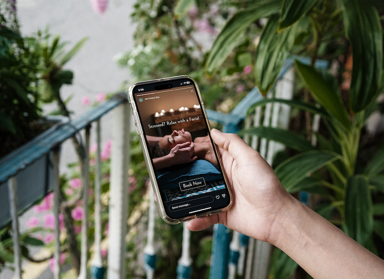

Brand Identity & Website Design
Figma - Adobe Illustrator
It is difficult for some people to not only remember what medications they are on or prescriptions that they have, but also what their function is and when to take them.
MedTracker is an app that keeps track of current prescriptions, reminders, and prescription history to use as a reference when needed.
